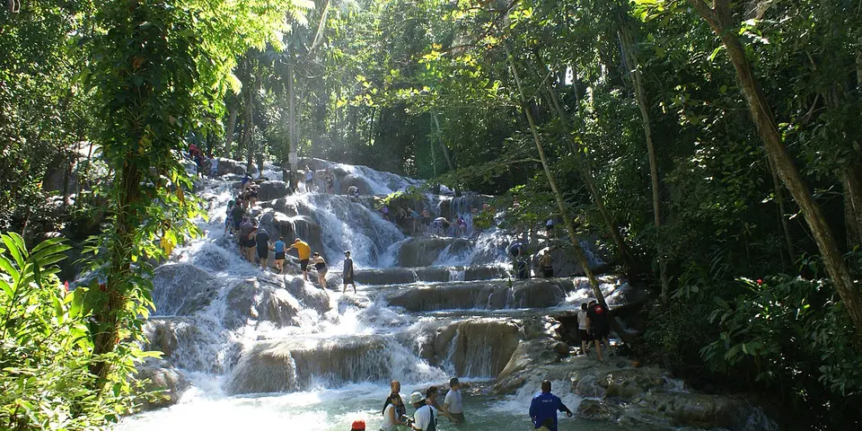

Central America & Caribbean
Jamaica on a budget
Reggae, smoky jerk chicken, rainforest waterfalls and the coffee-growing Blue Mountains, with cheaper guesthouses away from the resort strips.
Photo: Breakyunit at English Wikipedia, CC BY-SA 3.0, via Wikimedia Commons

Classic route
Kingston and the Blue Mountains, Port Antonio, then Negril. 10 days.
Before you go
Flights to Kingston: Skyscanner · Kiwi.com · Google Flights
Hostels and guesthouses in Kingston · Port Antonio · Negril · Blue Mountains
Tours and tickets: Kingston · Port Antonio
Mobile data: Jamaica eSIM
Travel insurance: SafetyWing
How much 10 places in Jamaica cost
Daily budgets per person in US dollars: a hostel dorm or simple guesthouse, local food, local transport and the usual entry fees.
-
Kingston
The Bob Marley Museum, Trench Town, Devon House ice cream and the sound systems that shaped reggae and dancehall.
Bed $28 · Food $15 · Getting around $6 · Extras $6
Budget tip: Route taxis and JUTC buses are cheap. Join locals at a Sunday or midweek street sound-system party.
$55per day -
Port Antonio
Bamboo rafting on the Rio Grande, swimming in the Blue Lagoon and Reach Falls on Jamaica's lush, unhurried east coast.
Bed $28 · Food $15 · Getting around $5 · Extras $6
Budget tip: Much quieter than the north coast resorts. Eat jerk pork at Boston Bay's roadside stands, where jerk cooking is said to have begun.
$54per day -
Negril
Seven Mile Beach's soft white sand by day, then cliff jumping and sunset at Rick's Café on the West End.
Bed $34 · Food $18 · Getting around $5 · Extras $4
Budget tip: Eat at jerk shacks rather than resort restaurants. Guesthouses on the West End cliffs are cheaper than beachfront hotels.
$61per day -
Blue Mountains
A night hike up Blue Mountain Peak for sunrise over both coasts, then fresh coffee at small family farms on the way down.
Bed $28 · Food $15 · Getting around $10 · Extras $6
Budget tip: Sleep at a simple guesthouse near Penlyne or Whitfield Hall and start walking around 2am to reach the top by dawn.
$59per day -
Treasure Beach
A quiet south-coast fishing community with dark-sand coves, friendly guesthouses and Pelican Bar standing on stilts out at sea.
Bed $28 · Food $15 · Getting around $5 · Extras $5
Budget tip: Ask a local fisherman to run you out to Pelican Bar; it costs less than an organized tour.
$53per day -
Cockpit Country
Steep karst hills, deep caves and Accompong, a Maroon town with its own proud history of resistance.
Bed $28 · Food $12 · Getting around $8 · Extras $6
Budget tip: Accompong's festival falls on 6 January. Hire a local guide for the caves and trails, which are easy to get lost on.
$54per day -
Falmouth
Georgian-era port town with old stone buildings and evening boat trips on the Luminous Lagoon.
Bed $28 · Food $15 · Getting around $5 · Extras $10
Budget tip: Avoid days when cruise ships dock; local guides offer cheaper walking tours of the historic center.
$58per day -
Black River
Riverside town on the south coast with crocodile-spotting boat safaris and day trips to YS Falls.
Bed $26 · Food $14 · Getting around $5 · Extras $15
Budget tip: Combine with Treasure Beach for cheaper stays; take local route taxis to YS Falls.
$60per day -
Montego Bay
The island's main airport town, with clear water at Doctor's Cave Beach, the Hip Strip and smoky jerk stalls.
Bed $34 · Food $18 · Getting around $5 · Extras $4
Budget tip: Eat at jerk stalls rather than resort restaurants. Route taxis run fixed routes for a dollar or two.
$61per day -
Ocho Rios
North coast town known for climbing Dunn's River Falls, Mystery Mountain trails and Blue Hole waterfalls.
Bed $32 · Food $17 · Getting around $5 · Extras $15
Budget tip: Visit Dunn's River early or on non-cruise days; route taxis are far cheaper than tour company transport.
$69per day
Know before you go
Jamaica on a budget: the basics
Currency
$1 = 159 JMD
Jamaican dollar
| Dollars to JMD | JMD to dollars | ||
|---|---|---|---|
| $1 | 159 JMD | 100 JMD | $0.63 |
| $5 | 794 JMD | 500 JMD | $3.15 |
| $10 | 1,588 JMD | 1,000 JMD | $6.30 |
| $20 | 3,175 JMD | 5,000 JMD | $31.49 |
| $50 | 7,939 JMD | 10,000 JMD | $62.98 |
| $100 | 15,877 JMD | 50,000 JMD | $315 |
A typical day here (about $59) is roughly 9,400 JMD.
Mid-market rate on 2026-10-05. Cash machines and exchange desks pay a little less.
Getting around
Knutsford Express coaches link Kingston, Ocho Rios, Montego Bay and Negril comfortably, while route taxis and minibuses are cheaper but crowded. For the Blue Mountains and Port Antonio, local guesthouses can arrange shared transfers. Only use licensed taxis with red PP plates.
Where to sleep
Guesthouses and a few hostels cover Kingston, Port Antonio and Negril, and the Blue Mountains have simple lodges and coffee farm stays.
What to eat
- Jerk chicken: spicy smoked chicken cooked over pimento wood
- Ackee and saltfish: national dish of ackee fruit with salt cod
- Beef patty: flaky golden pastry filled with spiced beef
- Curry goat: slow-cooked goat in a rich curry sauce
Money
Jamaican and US dollars are both used in tourist areas, but you'll get better value paying in local currency, and cards work in larger places. Tipping 10 to 15% is common if no service charge is added.
Phone data
Digicel and Flow SIMs are easy to buy with a passport, and coverage is good on the coast but patchy high in the Blue Mountains.
Heads up
Persistent touts are common around beaches and markets, so a polite but firm "no thanks" works best.
Jamaica travel: quick answers
How much does a day in Jamaica cost on a budget?
About $59 a day for one person, from $53 in Treasure Beach to $69 in Ocho Rios. That covers a hostel dorm or simple guesthouse, local food, local transport and the usual entry fees, so a week runs about $413 before flights.
When is the best time to visit Jamaica?
December to April is the best time, with the most reliable weather for getting around.
What is the cheapest place to visit in Jamaica?
Treasure Beach, at about $53 a day. A quiet south-coast fishing community with dark-sand coves, friendly guesthouses and Pelican Bar standing on stilts out at sea.
How long do you need in Jamaica?
Kingston and the Blue Mountains, Port Antonio, then Negril. 10 days.
How much is $1 in Jamaica?
One US dollar is about 159 Jamaican dollar (JMD), going by the mid-market rate on 2026-10-05. So $20 is roughly 3,175 JMD, and a typical budget day of $59 comes to about 9,400 JMD.
How do you get around Jamaica cheaply?
Knutsford Express coaches link Kingston, Ocho Rios, Montego Bay and Negril comfortably, while route taxis and minibuses are cheaper but crowded. For the Blue Mountains and Port Antonio, local guesthouses can arrange shared transfers. Only use licensed taxis with red PP plates.
What food should you try in Jamaica?
Jerk chicken, spicy smoked chicken cooked over pimento wood. Ackee and saltfish, national dish of ackee fruit with salt cod. Beef patty, flaky golden pastry filled with spiced beef. Curry goat, slow-cooked goat in a rich curry sauce.
Planning around the seasons? See where to go in December, or compare the cheapest countries nearby.
Similar budgets nearby
- Trinidad and Tobago $55/day
- Belize $64/day
- Costa Rica $64/day
- Honduras $49/day